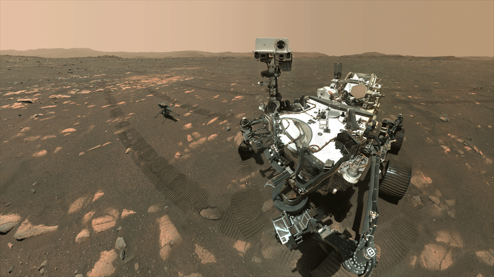

Life on Earth is taken for granted; we have the perfect planet that our bodies have adapted to and live in sync with. Yet, at any moment, we could lose it all to a large asteroid, nuclear fallout, biological warfare, or a pandemic—we have to protect the human race from our own mistakes. Another suitable planet for us is a backup in case we lose our first. Establishing a foothold beyond Earth isn’t just a dream—it’s a necessity, and Mars has long been our primary target for this endeavor. NASA has sent out numerous craft to examine and study the planet, most notably the Perseverance Rover. This rover has become an icon in exploration history, making discoveries about Mars’ volcanic history, the role of water in Jezero Crater, and its habitability.
Rovers and spacecraft being sent out to Mars to collect data and survey the planet are unreal, yet they pale in comparison to SpaceX and Blue Origin's ambitions—sending humans to Mars. Ignoring the financial and political implications, the bewildering magnitude of challenges the astronauts will face is unlike any human has faced before. They’ll come face to face with the harsh environment, radiation, and psychological difficulties. They will be the only humans in history to step foot on another planet and—considering they will land when Mars is closest to Earth—will be around 59.7 million miles away from civilization.
Mars, in its current state, is a real-life cold hell. It’s extremely cold and has a thin atmosphere, dust storms, and high radiation levels. It is a wasteland with no human contact for millions of miles. Without a spacesuit, you would survive for only two minutes, filled with torture as you wait for your organs to rupture. Mars’s winter nights are so cold, in fact, -153 degrees Celsius, that the Perseverance Rover had a multi-mission radioisotope thermoelectric generator, which is, without exaggeration, simply the radioactive decay of plutonium-238.
Why does Mars capture our imagination and scientific interest? Chiefly because it’s the closest planet to Earth that could potentially have supported life. Our planet has an immense amount of known history, but there is so much more we still don’t understand. Colonizing and studying another planet in person on the surface will not just increase our understanding of Mars but of Earth as well. There’s a theory right now that suggests life on Earth originated from Mars, and a part of it was broken off due to some sort of collision and landed on Earth. Analyzing Mars’s surface could expand our knowledge of biology and alien life.
No matter how frigid and grim living on Mars might be, it’s our best bet at being a multi-planetary species. Other than Venus—which is way too hot to live on—everything else is just too far away to be a plausible option. Mars not only had water on its surface at one point, but it was an Earth-like planet, with lakes, rivers, and a thick, breathable atmosphere. If we terraform Mars and make it a second Earth, the human race would have a much lower chance of ever going extinct. It would serve as both a backup plan and a haven for life.
Mars is also special for a very specific reason: it could be self-sufficient. With water available, it is quite literally possible for colonizers to grow plants and mine the surface minerals to create an independent society of Martians. Time will unfold the truth, but as we wait, we must work towards this increasingly hefty feat because achieving it would launch the human race forward technologically, economically, and culturally. It would open up new horizons for expansion and foster a global sense of unity and purpose as humanity collectively works towards becoming a multi-planetary species.